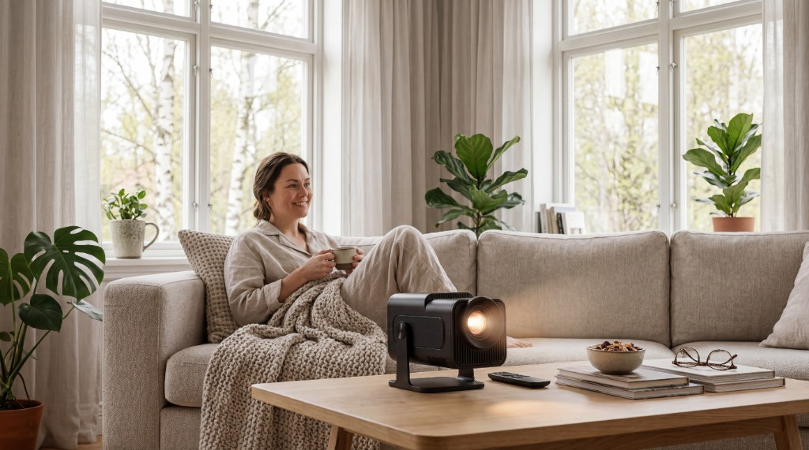
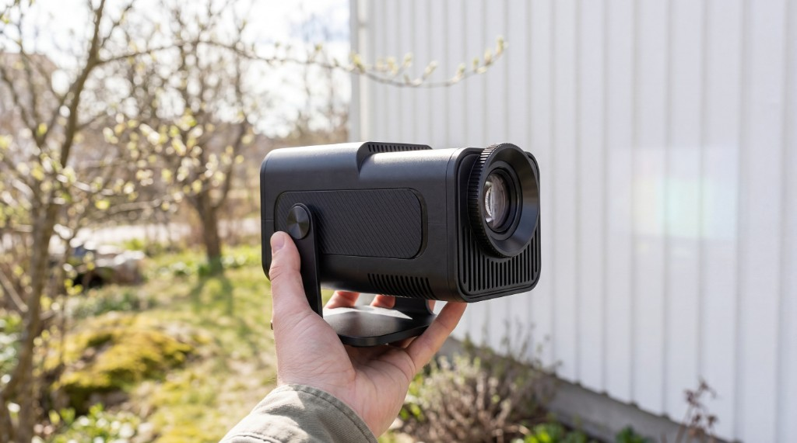

MiniLux Pro 2 recension 2026: native 1080P och 390 ANSI Lumen
Vi testade MiniLux Pro 2 i tre veckor i sovrum, vardagsrum och barnrum. Native 1080P, 390 ANSI Lumen, WiFi 6 och 5W HiFi för 1 999 kr. Är uppgraderingen från Pro 1 värd 500 kr extra?

MiniLux Pro 2 är uppföljaren till den populära MiniLux Pro och kostar 1 999 kr hos miniprojektor.se. Skillnaden på 500 kr mot Pro 1 köper dig native 1080P-upplösning, nästan dubbelt så mycket ljus (390 mot 200 ANSI Lumen), WiFi 6 och ett markant bättre inbyggt ljud. Vi använde den dagligen i tre veckor för att avgöra om uppgraderingen faktiskt syns och hörs i praktiken.
Design och portabilitet
Pro 2 har samma kompakta form som sin föregångare – runt 1 kg, roterbar lins på 180 grader och en diskret vit design som smälter in i alla rum. Fläktljudet är dämpat och stör inte vid normalt filmtittande. Stativet som medföljer ger stabil placering på bord och soffbord utan att tippa.

Bild och ljus i praktiken
Native 1080P märks tydligt på stora ytor. Text i appar, undertexter och detaljerna i sportbilder är skarpare än vad XGA-upplösningen på Pro 1 klarar. Med 390 ANSI Lumen kan du gå upp till 150 tums bild och fortfarande hålla acceptabel kontrast även om det inte är totalt mörkt i rummet. Kontrastratio på 10 000:1 ger djupa svärtor i filmscener. Automatisk keystone justerar bilden snabbt och träffsäkert.

Perfekt för barnrum och familjebruk
Den lätthanterliga designen och enkla menyn gör Pro 2 till ett självklart val för barnrum. Inbyggda appar täcker de vanligaste streamingtjänsterna utan att barnen behöver hantera en extern box. Den roterbara linsen gör att du kan projicera mot taket för myskväll i sängen. Vi testade den flitigt med barn i 5–12 år och det funkade direkt.

Vardagsrummet – vår favoritplacering
Vardagsrummet är där Pro 2 verkligen skiner. Ställ den på soffbordet, rikta mot väggen och du har filmbioupplevelse inom loppet av en minut. WiFi 6 höll stabilt stream i 4K utan buffring även när resten av hushållet var online. 5W HiFi-högtalaren är ett riktigt kliv upp från Pro 1 – tillräcklig för ett litet till mellanstort rum. Vill du ha mer bas kopplar du enkelt in en Bluetooth-högtalare.

Anslutning och appar

WiFi 6 Dual Band, Bluetooth, HDMI, USB och 3,5 mm ger full flexibilitet. Över 4 000 inbyggda appar täcker Netflix, Disney+, YouTube och det mesta däremellan. Strömförbrukning 40 W – något lägre än Pro 1:s 48 W trots den högre ljusstyrkan.

Specifikationer
| Upplösning | Native 1080P (1920×1080) |
| Ljusstyrka | 390 ANSI Lumen |
| Kontrast | 10 000:1 |
| WiFi | WiFi 6 Dual Band |
| Ljud | 5W HiFi inbyggd högtalare |
| Max bildstorlek | 150 tum |
| Roterbar lins | 180 grader |
| Ström | 40 W via medföljande kabel |
| Garanti | 2 år |
| Pris | 1 999 kr |
Betyg
Vad vi gillar
- Native 1080P – tydlig skärpa på stor yta
- 390 ANSI Lumen, mer marginal för ljusare rum
- WiFi 6 – stabil 4K-streaming
- 5W HiFi, sällan behov av extern högtalare i litet rum
- 180° roterbar lins och 2 års garanti
Vad vi saknar
- Kräver eluttag, inget batteri
- 500 kr dyrare än Pro 1
- Klarar inte dagsljus utomhus
Vill du jämföra med basmodellen? Se vår jämförelse MiniLux Pro vs MiniLux Pro 2. Räcker budgetversionen för dig? Läs MiniLux Pro-recensionen.
MiniLux Pro 2
Fri frakt · 2 års garanti · 1 999 kr
Se MiniLux Pro 2 hos miniprojektor.se